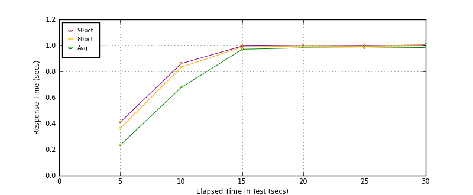
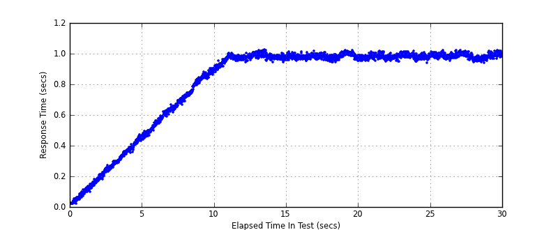
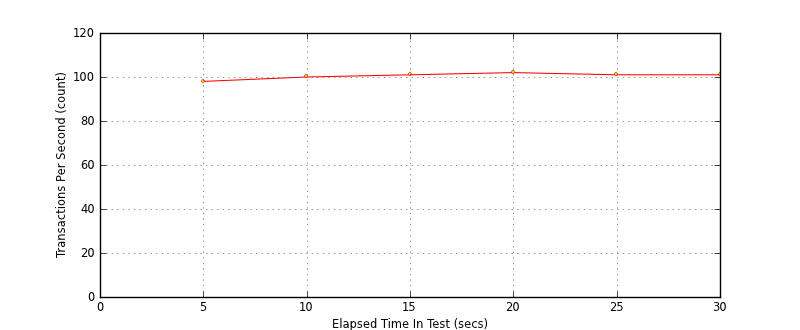

Performance Results Report
Summary
transactions: 3130
errors: 0
run time: 30 secs
rampup: 10 secs
test start: 2014-01-28 16:21:02
test finish: 2014-01-28 16:21:32
time-series interval: 5 secs
workload configuration:
| group name | threads | script name |
|---|
| user_group-1 | 100 | read_user.py |
All Transactions
Transaction Response Summary (secs)
| count | min | avg | 80pct | 90pct | 95pct | max | stdev |
|---|
| 3130 | 0.020 | 0.808 | 0.989 | 0.997 | 1.004 | 1.024 | 0.287 |
Interval Details (secs)
| interval | count | rate | min | avg | 80pct | 90pct | 95pct | max | stdev |
|---|
| 1 | 494 | 98.80 | 0.020 | 0.234 | 0.363 | 0.410 | 0.436 | 0.470 | 0.127 |
| 2 | 503 | 100.60 | 0.438 | 0.678 | 0.834 | 0.861 | 0.876 | 0.904 | 0.133 |
| 3 | 509 | 101.80 | 0.879 | 0.971 | 0.989 | 0.996 | 1.004 | 1.024 | 0.025 |
| 4 | 510 | 102.00 | 0.944 | 0.982 | 0.996 | 1.002 | 1.007 | 1.020 | 0.015 |
| 5 | 509 | 101.80 | 0.939 | 0.980 | 0.992 | 0.999 | 1.004 | 1.018 | 0.014 |
| 6 | 505 | 101.00 | 0.938 | 0.984 | 0.998 | 1.005 | 1.010 | 1.023 | 0.016 |
Graphs
Response Time: 5 sec time-series

Response Time: raw data (all points)
Throughput: 5 sec time-series

Custom Timer: get_tweets
Timer Summary (secs)
| count | min | avg | 80pct | 90pct | 95pct | max | stdev |
|---|
| 3030 | 0.019 | 0.807 | 0.989 | 0.997 | 1.004 | 1.024 | 0.287 |
Interval Details (secs)
| interval | count | rate | min | avg | 80pct | 90pct | 95pct | max | stdev |
|---|
| 1 | 494 | 98.80 | 0.019 | 0.233 | 0.363 | 0.410 | 0.436 | 0.470 | 0.127 |
| 2 | 503 | 100.60 | 0.437 | 0.678 | 0.833 | 0.861 | 0.876 | 0.904 | 0.133 |
| 3 | 509 | 101.80 | 0.879 | 0.971 | 0.989 | 0.996 | 1.004 | 1.024 | 0.025 |
| 4 | 510 | 102.00 | 0.944 | 0.982 | 0.995 | 1.002 | 1.007 | 1.020 | 0.015 |
| 5 | 509 | 101.80 | 0.939 | 0.979 | 0.992 | 0.999 | 1.004 | 1.018 | 0.014 |
| 6 | 505 | 101.00 | 0.938 | 0.984 | 0.998 | 1.005 | 1.010 | 1.023 | 0.016 |
Graphs
Response Time: 5 sec time-series
Response Time: raw data (all points)

Throughput: 5 sec time-series
